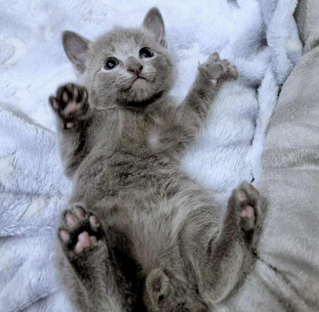

Pielęgnacja
Rosyjski niebieski nie nastręcza żadnych problemów, jeśli idzie o jego prawidłową pielęgnację. Wystarczy go jedynie wyczesać raz w tygodniu. Najlepiej robić to miękką szczotką dla kota. Ich podszerstek jest takiej samej długości, co włos okrywowy – co nie jest spotykane w świecie kotów i czyni z tej rasy zwierzęta wyjątkowe. Czesz go delikatnie, by nie uszkodzić struktury futra.
Nie ma potrzeby kąpania zdrowego rosyjskiego niebieskiego, on sam doskonale zadba o swoją higienę, dlatego raczej nie urządzaj mu kąpieli – chyba że ze względów zdrowotnych zostaną one zalecone przez lekarza weterynarii, na przykład po to, by się pozbyć chorób skóry lub pasożytów, które mogą kryć się w jego futrze.
Kontroluj stan uzębienia i pazurków, a także higienę uszu kota. Uszy i zęby czyść w razie potrzeby szczoteczką do zębów dla kota, a pazurki przycinaj. Niebieski rosyjski to kot pełen energii, a także apetytu. Może mieć przez to tendencje do nadwagi i otyłości – jeśli nie zapewnisz mu odpowiedniej dawki ruchu i będziesz zwierzaka przekarmiać.
Możesz karmić go wysokomięsną karmą komercyjną wysokiej jakości dla kota lub samodzielnie komponować posiłki. Jeśli chcesz spróbować swoich sił w samodzielnym przygotowywaniu kotu posiłków, a nie masz odpowiedniej wiedzy na temat właściwego bilansowania diety, skonsultuj się z lekarzem weterynarii, który udzieli Ci najlepszych porad w tym temacie.